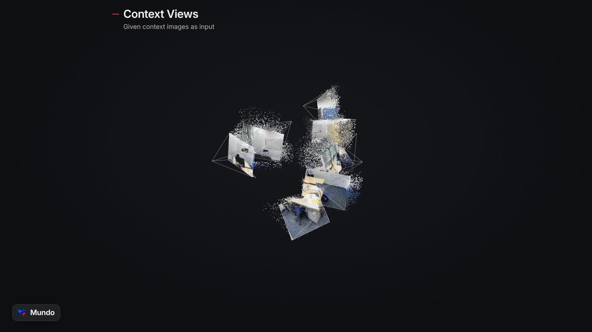
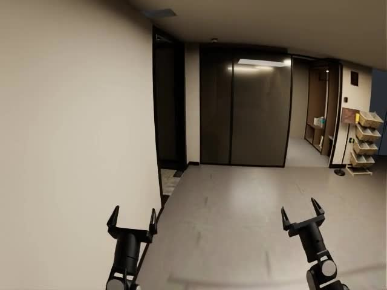
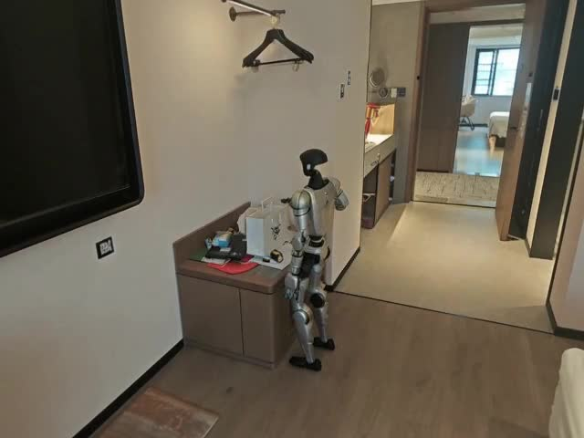
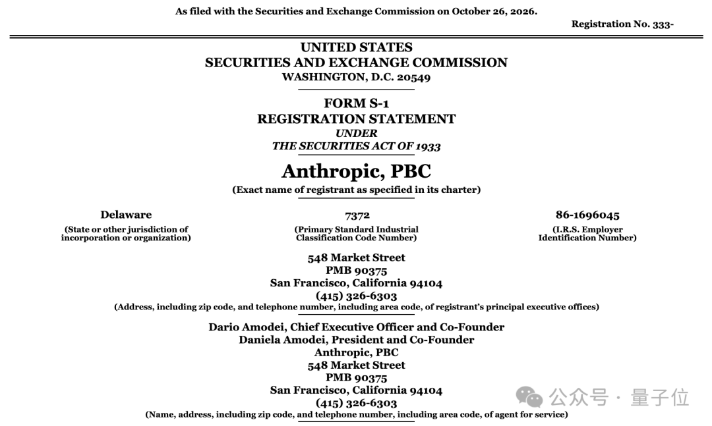
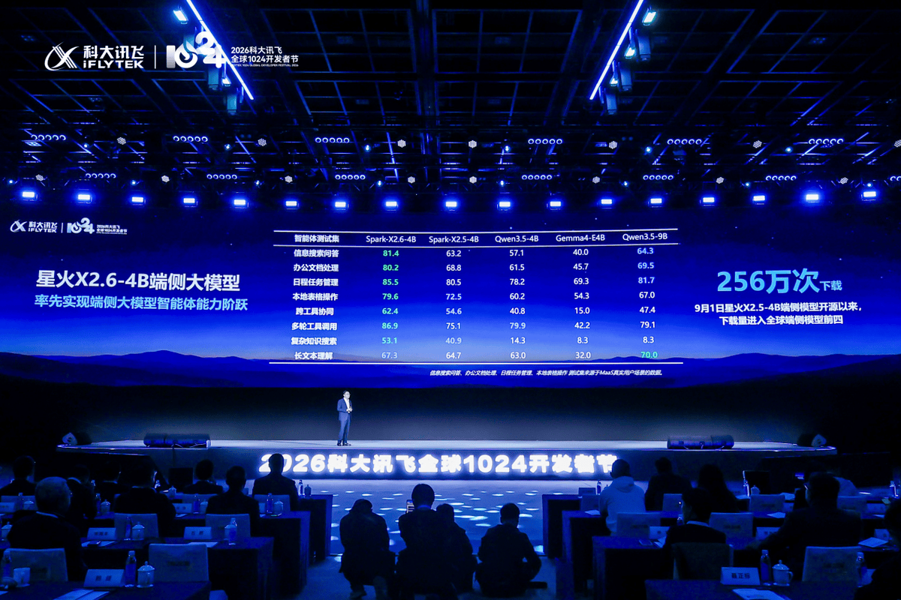
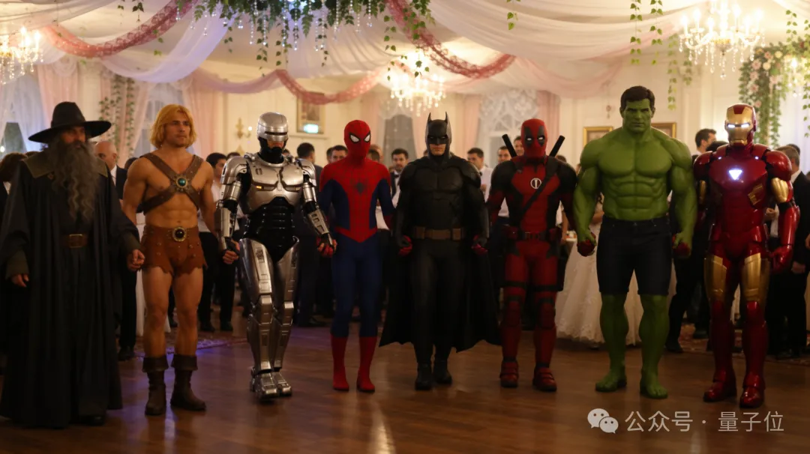

AI 产品情报 · 2026-10-31（周六）
本版覆盖媒体 / 一手源约 14 家（外文 5 / 中文 5 / 官方 4）：外文是 Hugging Face Blog、Mistral 官方、Artificial Analysis（经官方转述）、Tech 社区 X；中文是量子位、品玩、GPLP/大晓通稿链、智东西未专稿则跳过；官方是 Mundo 项目页、智元创新日通稿、Mistral OSS 公告、HF 模型卡。10-30 例行失败，本期补齐 10-29 晚报至今日早间。
今日要点（先看这三条）
- Mundo（大晓×南洋理工）：用几张照片建「可探索 + 可物理交互」的定制世界模型；10-30 中文媒体集中扩散，对世界模型产品线是强对标样本。
- 智元 GO-3 Preview + WITA-OMNI：作业智能与交互智能双模型登顶多榜，并抛出 Worken 有效工时单位与灵渠 OS 年底开源承诺。
- Mistral Large 4（Le Chonk）开源权重：1T MoE / ~49–52B 激活，官方称开源侧 coding + 防御安全领先；HF / vLLM / SGLang 当日可跑。
世界模型大晓机器人 × 南洋理工发布 Mundo：几张照片建成可探索、可编程物理交互的定制世界
结论：这是「按地点定制」的世界模型，而不是泛化视频生成。它把 3D 代理 + MuJoCo 物理 + 视频扩散渲染串成一条链，直接服务机器人 Real-to-Sim——对阿汤公司的世界模型产品线，比又一个文生视频 Demo 更有对标价值。
1. 发生了什么
大晓机器人联合南洋理工大学 S-Lab 公开 Mundo（Customized World Model）：输入少量真实场所照片或视频，输出可自由探索、可用代码编辑物理属性、可做机器人导航/操作仿真的三维世界。英文项目页与 HF 技术博文约在 10 月下旬落地；作者 X 帖 10-28 起扩散；中文产业媒体在 10-30 形成集中报道波（GPLP 等）。本条按「国内传播 + 产品化叙事高峰」收录，并注明英文首发时间早于中文稿。
一手：项目页 · HF 博文（2026-10-23） · 作者 X @onelineluo（约 238 赞 / 8.1k 曝光）· 中文：GPLP 10-30
2. 产品介绍
三件套流水线：
- 建代理世界：3D 检测器给初始包围盒 → VLM Agent 做 analysis-by-synthesis 迭代对齐输入视图。
- 代码世界跑物理：场景程序写物体质量/摩擦/动作；默认 MuJoCo 算重力、接触、碰撞。
- 代理帧 + 视频模型渲染：扁平类别色代理视频 + 上下文影像注入视频扩散（基于 MiniMax-H3 Ref2VA 微调），按相机路径出片。
官方演示里能直接看到：酒店房间多视角探索；拉开抽屉扔苹果砸显示器（含子弹时间）；Unitree G1 / 机器狗在重建楼层导航；洗衣房开门交互。博文坦承限制：重建约 10–20 分钟；八卡 A800 上渲染约 1.5 FPS；小物体易漂浮；尚无长时记忆。

官方演示片截帧——看完应搞懂：同一组照片可沿任意相机路径补视角。

酒店楼层导航演示截帧——看完应搞懂：3D 代理直接给机器人路径规划用。

G1 机器人场景截帧——看完应搞懂：同一重建环境可换不同机器人本体做仿真。
页内视频（官方）
谁发的：Mundo 项目组官方演示剪辑
看完应搞懂：从几张图 → 自由探索 → 物理交互 → 机器人任务，整条链路长什么样。
谁发的：官方酒店导航片段
看完应搞懂：重建楼层如何支撑从大厅到客房的导航仿真。
谁发的：官方 G1 机器人片段
看完应搞懂：人形机器人如何在定制场景里走完一条任务轨迹。
怎么自己看（5 分钟）
打开
项目页 → 先点 Spatial exploration 看「1–12 张图换视角」→ 再点 Physical interaction 拖垃圾桶/抽屉 → 最后看 Robotics application 酒店导航三段。HF 博文有完整公式与限制清单。
3. 导致什么影响（含竞品）
- 对标 Atlas / 快乐生蚝 / Odyssey / Zing：Mundo 论文叙事明确写「支持与 Atlas 类似的场景重建与时空模拟」，但差异是把质量、摩擦写进场景程序，用物理引擎算响应，再交给视频模型渲染——不是纯隐式视频世界模型「猜下一帧」。
- 对标 Genie / 可交互游戏世界：Genie 系偏通用交互策略；Mundo 偏「这个具体酒店/办公室」的 Real-to-Sim 数据工厂。大晓文稿把它嵌进自家 Kairos 体系，补环境建模与训练数据生成。
- 产业含义：谁能把「现场几张图 → 可训策略的仿真场」做成产品流水线，谁就卡住具身落地的数据瓶颈。速度（重建分钟级、渲染 1.5 FPS）仍是落地门槛。
对我们（世界模型 / WASD+文字控制）
Mundo 的输入是多视角图 + 代码场景程序，不是逐帧 6-DoF 相机轨迹。若要对齐评测，更接近「文字/脚本驱动动作 + 相机路径探索」，与公司键盘控制思路可对话；但物理属性与 MuJoCo 闭环是额外能力层，榜单选型时别把它和纯视频生成榜混为一谈。
4. 用户如何评价
作者首帖 ~238 赞 / ~8.1k 曝光
研究圈转发为主
中文 10-30 产业通稿波
- 正面：「照片 → 可交互世界」叙事清晰；物理可编程被机器人从业者点名；项目页交互 Demo 完成度高。
- 保留：作者自己列了速度、小物体、长时记忆三大短板；目前公开的是研究页 + 演示，未见可下载权重或面向客户的 SaaS 入口。
- 注意：部分中文稿带大晓品牌软文色彩（Kairos 体系植入），已在媒体卡标注；技术事实以项目页 / HF 博文为准。
具身大厂智元创新日：GO-3 Preview 三榜第一、WITA-OMNI 四榜第一，并推出 Worken 与灵渠 OS
结论：这不是单模型新闻，而是「作业智能 + 交互智能 + 原生 OS + 有效工时单位」的整包叙事。GO-3 强调全链路 Scaling（预训练→后训练→部署后 RSI）；WITA-OMNI 打无唤醒词、亚秒响应的面对面交互。对标对象是 Figure / π 系 VLA 与各类语音交互机器人方案。
1. 发生了什么
10 月 29 日智元创新日，稚晖君团队发布：
- GO-3 Preview：具身基座，WRAM（World Reasoning Action Model）架构；官方称登顶 RoboDojo、RoboTwin、RoboColiseum。
- WITA-OMNI：全模态交互大模型；官方称 Daily-Omni、TimeLens-Bench、EmbSpatialBench、MMAU 四榜第一；平均响应约 600ms，最快约 400ms；无唤醒词。
- Worken：物理 AI 有效智能工时单位 = 活跃机器人数 × 自主工作时长 × 产出效能比。
- 灵渠 OS 1.0：具身原生 OS；宣称 1000Hz 负载下端到端时延抖动 <4μs；计划年底开源并捐赠开放原子基金会。
- 本体侧：精灵 G2 Max（单臂 20kg / 双臂峰值 50kg）、AHA3 三智合一硬件架构等。
一手报道：品玩 · GO-3 · 量子位 · 创新日总述（10-30）
2. 产品介绍
GO-3 怎么工作（按品玩 / 官方口径）：预训练用 CoAE 视觉表征 + SVP 单步未来预测 + KASO 筛选相容未来；后训练用 Genie Evolver（百台真机 + 仿真 + Genie Envisioner 2.0 世界模型）；部署后用 Genie Master + EEP 协议做无人在环持续改进。便利店案例：挂小挂钩任务成功率从首日 28.6% 到 5 天后 85.7%（官方数字，需独立复现验证）。
WITA-OMNI：语音/视觉/文本进，语音/表情/动作出；快慢双系统（前台 Interaction Engine + 后台 Background Agent）；Intelligent FaceUI 可在脸屏动态讲解；支持听 100+ 语言、说 29 种语言与 7 种方言；宣称 2026-12 国内全面部署、2027-Q1 海外。

量子位报道配图——看完应搞懂：创新日把作业智能与交互智能并列为「三智」两翼。

Worken 看板配图——看完应搞懂：智元试图用「有效工时」替代纯 Demo 叙事。
灵渠 OS 介绍图——看完应搞懂：从硬件抽象到 Skill 封装的原生 OS 定位。

WITA-OMNI 配图——看完应搞懂：交互模型与作业模型是分开的产品线。
怎么自己看
先读品玩 GO-3 长文搞懂 WRAM / Genie Evolver / Genie Master 三段；再读量子位总述拿 Worken 公式与部署案例（龙旗产线、爱仕达门店、横琴长隆）。榜单第一均为官方自评口径，进 RoboDojo 等榜页核对排名再引用对外材料。
3. 导致什么影响（含竞品）
- 对标 Figure / RT-X / π0 / 国内各家 VLA：GO-3 的差异化叙事是「全链路 Scaling + 部署后 RSI」，不只拼零样本操作成功率；世界模型（Genie Envisioner 2.0）被放进后训练环，而不是单独卖视频生成。
- 对标纯语音助手机器人：WITA-OMNI 强调无唤醒词、方位/声纹/唇动联合选人、FaceUI——比「加个 ASR」更重交互原生。
- Worken：意图把行业 KPI 从「Demo 酷不酷」拉到「自主工时 × 产出」。若被客户接受，招投标叙事会变；目前仍是智元单方面定义。
- 灵渠 OS 开源：若真捐赠并可用，会影响中间件选型；需等年底代码与许可证落地再判断。
4. 用户如何评价
量子位 / 品玩头部曝光
创新日演出现场热度高
榜单第一待第三方复核
- 正面：便利店无人在环改进、龙旗产线 99.99% 作业成功率、长隆近 500 台部署等案例让「物理 AI 上岗」故事更硬。
- 批评 / 疑问：多榜第一高度依赖厂商自报；Worken 公式尚未见独立审计；OS「2 亿行代码」等表述需开源后验证。
- 广告提示：量子位稿件语气活泼、接近品牌传播，技术细节仍可用，但「杀穿榜单」类标题按公关稿阅读。
开源旗舰Mistral 正式开放 Large 4（Le Chonk）权重：1T MoE，主打 Coding Agent 与防御安全
结论：10-29 权重落地是比 10-6 预览 API 更实质的节点。官方口径：开源侧 FrontierCode 第一、Coding Agent Index 与 GLM-5.3 打平但 token 更省、Cyber Index 开源前列。许可是改版 MIT（MaaS 商用需另签）。对「要主权部署的欧洲企业 + 安全团队」叙事极强。
1. 发生了什么
Mistral 于 2026-10-29 发布改进版 Large 4 开源权重（预览后约三周持续 RL）。模型约 1T 总参 / ~49–52B 激活，原生多模态，1M 上下文；HF 上提供 FP8 与 NVFP4；Transformers / vLLM / SGLang / llama.cpp 日零支持。官方 X 主帖约 6.1k 赞 / 74 万曝光。HF 博文同日上线。
一手：Mistral OSS 公告 · HF 博文 · 模型卡 · X @MistralAI
2. 产品介绍
架构要点（HF）：72 层、MLA + DeepSeek 式稀疏注意力索引、128 专家选 4 + 1 共享专家；Pixtral 1.6B 视觉编码器；三种 reasoning 档位 low/medium/high（默认 high，不能真正关掉）。
官方亮点数字（需独立复核）：FrontierCode 2.0 开源第一 19.7%；Terminal-Bench 4.0 开源领先且较预览 +13pt 至 41%；AA Coding Agent Index 48% 打平 GLM-5.3 但平均少 47% token；Cyber Index 51%；有害网络请求拒绝率 96.6%（开源最高自称）。API 定价 $0.70 / $2.10 per M（in/out）。
 HF 博文封面——看完应搞懂：社区入口是博文 + 模型集合，不是只丢一个 GGUF。
HF 博文封面——看完应搞懂：社区入口是博文 + 模型集合，不是只丢一个 GGUF。
 Mistral OSS 公告封面——看完应搞懂：官方把 Coding + Defenders 当成双主叙事。
Mistral OSS 公告封面——看完应搞懂：官方把 Coding + Defenders 当成双主叙事。
怎么自己看 / 跑
读
OSS 公告 的三张核心图（FrontierCode / Token 效率 / Cyber）→ 打开 HF 博文复制 vLLM 或 transformers 示例 → 注意 NVFP4 需要 Blackwell；FP8 示例常用 8 卡。许可：可商用微调，但做 Model-as-a-Service 要另获 Mistral 商业许可。
3. 导致什么影响（含竞品）
- 对标 DeepSeek V4 / GLM-5.3 / Qwen3.8 Max / Kimi K3：Mistral 不拼「全能榜第一」，而拼 agentic coding 效率曲线 + 可自托管的防御安全。闭源 Claude Opus / GPT 系在部分 cyber 复现任务上会拒答，开源权重把策略交给部署方。
- 主权 AI：欧洲自建机房从零训练 + 开源权重，是对美国闭源 API 依赖的产品化反击；微软 Foundry 已上架。
- 成本现实：社区吐槽「git clone 1T，这得等一会儿」——推理门槛仍是 8 卡级，个人玩家靠 GGUF 低比特。
4. 用户如何评价
官方帖 ~6.1k 赞 / ~74万曝光
SGLang Day-0 支持被疯转
中文区「写代码+搞安全」总结帖
- 正面：安全厂商（Booz Allen、Cloudflare、Zscaler、Fortinet、Rubrik 等）背书防御向能力；Surge 盲测编码偏好高于多数开源对手。
- 批评：硬件门槛高；部分用户调侃「开源也是预算问题」；基准数字均为官方或合作方场景，社区独立榜还需观察一两周。